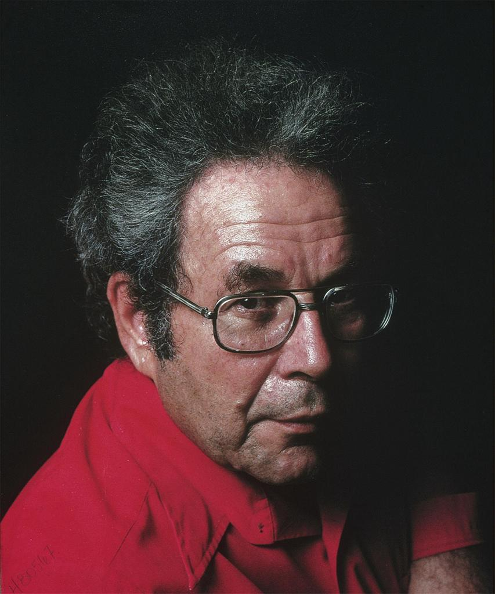
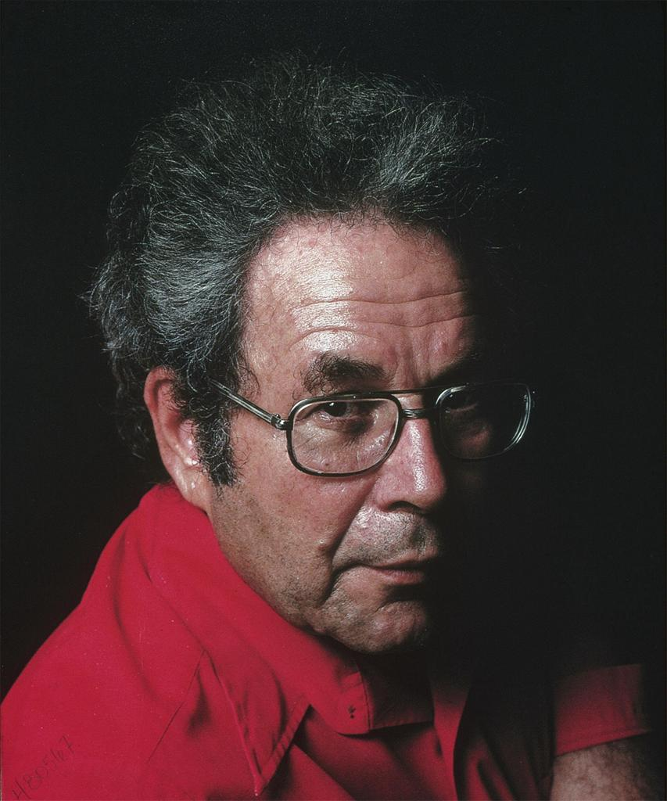

Visite le 8 mars 2024, au Musée des beaux arts Montréal
L'œuvre réalisé par l’artiste américain George Segal met en évidence une femme assise sur son lit. Elle utilise du plâtre, du bois, de l’acrylique et plusieurs autres matériaux divers. Mesurant environ les dimensions d’une petite pièce, elle date de 1993, démontrée clairement par le style post-1980 lorsque Segal commence à renoncer à ses œuvres les couleurs vives, et est acheté de la collection Horsley et Annie Townsend.

 
